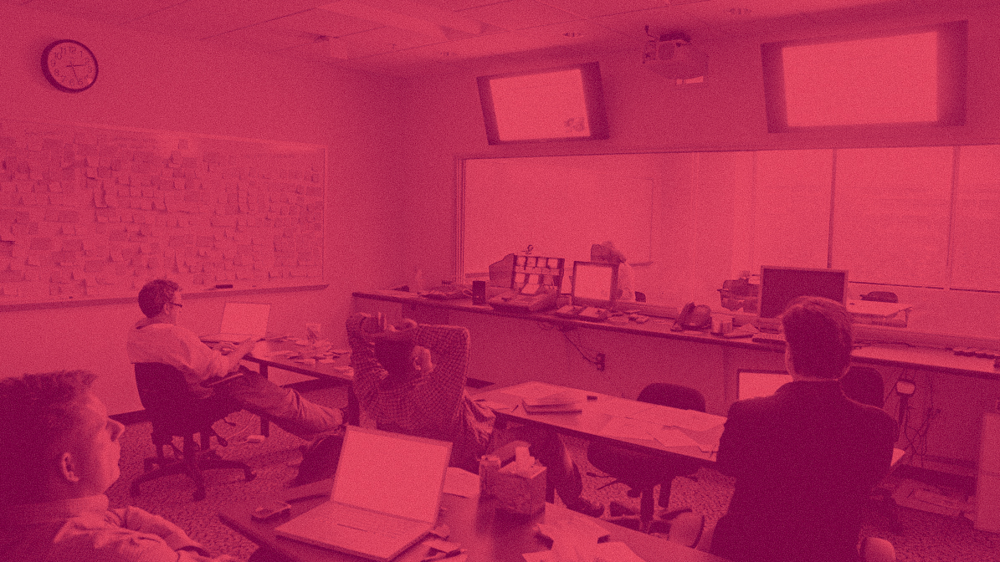
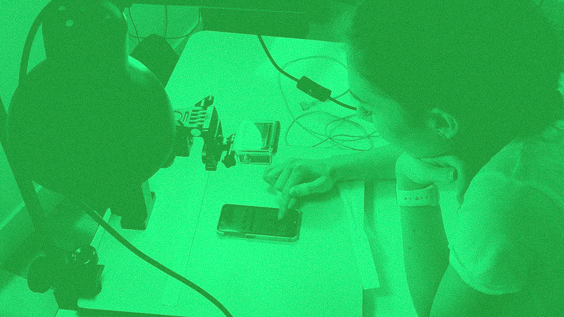

Usability testing
Don't make me think. – Steve Krug
Usability test: UI designers are monitoring a tester using their system.
A usability test is a user test of the usability or ease of use something. The usability of a product is a part of the overall user experience. This can include websites, applications, services and anything else that requires user interaction.
A usability test seeks to identify problems or confusion within the product. It is typically observed by a researcher, and if multiple users experience the same problems, it can lead to improvement suggestions.
Usability tests incorporate methods such as card sorting, user surveys, gaze tracking and other tools that gather input from users.
Jakob Nielsen and Don Norman are regarded as experts within the field.
Usability test: A respondent is testing a high-fidelity mobile-version while a GoPro is monitoring her behaviour – used for analysis later.
Usability testing in industry
Breastcancer.org case studyForaker used usability testing to redesign and redevelop af community platform for breastcancer.org. Streamlining the HTML/CSS, card sorting, interviews and re-designing the information architecture and presentation lead to more traffic, less registration time, more registered users and less need for support and as such decreased costs for the organization.
Usability test: A UI-designer is monitoring while interviewing a respondent testing an app.
Usability testing at DMD
In a project done by 3 DMD students they investigated the User experience of studyguide.itu.dk. They framed the study til focus on the information architecture. The methods used for the case was: Expert review, card sorting og usability testing.
Usability tests was conducted to investigate the findability, learnability, efficiency, memorability.
The test had five different tasks and was done in a stressful environment, to ensure that the users was forced to have an “head first” approach, as the target group would was known to have.